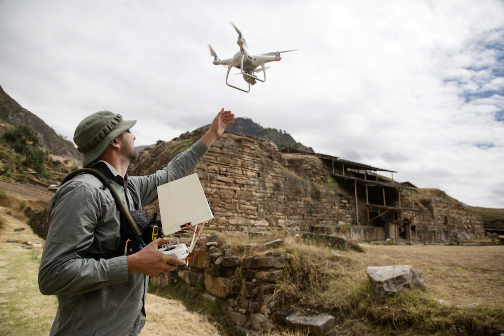

Masterworks: Journey Through History Provides A Transformative Educational VR Experience
Vive Team • 10.01.18
The night Cafe
Masterworks: Journey Through History is an educational VR museum where users can explore four culturally significant sites in full roomscale aided by the power of photogrammetry. Developed by FarBridge and published by CyArk, MasterWorks authentically transports users to places not easily accessible, and leverages actual archaeologists and historians to discuss the significance and meaning of these locations and their artifacts.
John Ristevski, CEO of CyArk, talks about Masterworks and how their first VR experience ensures that these places continue to inspire wonder and curiosity for years to come.
First off, tell us about MasterWorks and what users should expect when they try it out for the first time.
MasterWorks is a journey to 4 incredible locations created using fully navigable 3D environments created from photogrammetry rather than simply 360 video or hand modeled environments. The result is an experience the user can move through in real time, exploring every portion of these amazing historic sites. The result is an experience unlike anything else, creating a real sense of place. This incredible visual experience is made more interactive through audio hotspots where you can learn from the people who care for these sites about their history and the challenges they face today.

How did you come to pick the locations that you did, and what particular significance do they have?
The four locations in MasterWorks represent a diverse range of sites both geographically and temporally, spanning almost 3000 years of human history and 3 continents. Users can discover the fate of the ancient capital of Thailand, the mysteries of a pre-Incan temple in the Peruvian Andes, the astonishing Native American cliff dwellings of Colorado, and the monumental stone carvings of Mt Rushmore in South Dakota. These are also some of the most visually impressive sites in our archive with some especially interesting stories and I think users are going to have a great time exploring these places in VR.